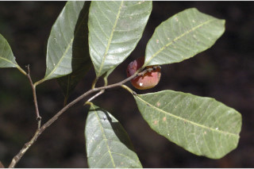
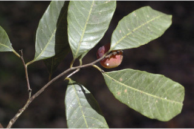

Trees up to 12 m tall.
12 ಮೀ ಎತ್ತರದವರೆವಿಗೆ ಬೆಳೆಯುವ ಮರಗಳು.
12 മീറ്ററോളം ഉയരത്തില് വളരുന്ന മരങ്ങള്.
மரம், 12 மீ. உயரமானது.
Bark finely fissured; blaze pinkish brown.
ಕಂದು ಮಿಶ್ರಿತ ನಸುಗೆಂಪು ಕಚ್ಚುಗಳುಳ್ಳ, ಸೂಕ್ಷ್ಮವಾದ ಸೀಳೀಕಾ ಮಾದರಿಯ ತೊಗಟೆಯನ್ನು ಈ ಪ್ರಭೇಧ ಹೊಂದಿರುತ್ತದೆ.
നന്നായി വിണ്ടു കീറിയ പുറംതൊലി, വെട്ട് പാട് പിങ്ക് കലര്ന്ന തവിട്ട് നിറത്തിലായിരിക്കും.
மரத்தின் பட்டை மெல்லிய வெடிப்புடையது; உள்பட்டை பிங்க்–ப்ரவுன் நிறம்.
Branchlets slender, terete, glabrous.
ಕಿರುಕೊಂಬೆಗಳು ತೆಳು ಹಾಗೂ ಗುಂಡಾಕೃತಿಯಲ್ಲಿದ್ದು ರೋಮರಹಿತವಾಗಿರುತ್ತವೆ.
നേര്ത്ത, ഉരുണ്ട അരോമിലമായ ഉപശാഖകള്.
சிறிய நுனிக்கிளைகள் மெல்லியது, குறுக்குவெட்டுத் தோற்றத்தில் வளையமானது, உரோமங்களற்றது.
Latex dirty white
ಸಸ್ಯ ಕ್ಷೀರವು ಕೊಳಕು ಬಿಳಿ ಬಣ್ಣದಲ್ಲಿರುತ್ತದೆ.
വൃത്തികെട്ട വെളുത്ത സ്രവം.
அழுக்கான வெள்ளை நிறம்.
Leaves simple, alternate, spiral; petiole 0.6-1.5 cm long, glabrous; lamina 6-16 x 1.2-4.5 cm narrow elliptic oblong to narrow oblong, apex caudate - acuminate, base acute to attenuate; margin undulate, chartaceous, glabrous, glaucous beneath; midrib raised above; secondary_nerves 14-20 pairs, moderate in angle, parallel; tertiary_nerves weakly percurrent.
ಎಲೆಗಳು ಸರಳ, ಪರ್ಯಾಯ – ಸುತ್ತು ಜೋಡನಾ ವ್ಯವಸ್ಥೆಯಲ್ಲಿದ್ದು,ರೋಮರಹಿತವಾದ,0.6 – 1.5 ಸೆಂ.ಮೀ ಉದ್ದವಿರುವ ಎಲೆತೊಟ್ಟುಗಳನ್ನು ಹೊಂದಿರುತ್ತವೆ.ಎಲೆ ಪತ್ರ 6 – 16 x 1.2 - 4.5 ಸೆಂ.ಮೀ ಗಾತ್ರವನ್ನು ಹೊಂದಿರುತ್ತವೆ ಹಾಗೂ ಸಂಕುಚಿತ ಅಂಡವೃತ್ತಾಕಾರದಿಂದ ಸಂಕುಚಿತ ಧೀರ್ಘ ಚತುರಸ್ರಾಕಾರದ ಆಕಾರದಲ್ಲಿರುತ್ತವೆ. ಬಾಲರೂಪಿಯಿಂದ ಕ್ರಮೇಣ ಚೂಪಾಗುವ ಎಲೆತುದಿ ಹಾಗೂ ಚೂಪಾದುದರಿಂದ ಒಳಬಾಗಿದ ತಳವುಳ್ಳ ಬುಡವನ್ನು ಹೊಂದಿರುತ್ತದೆ. ಎಲೆಯಂಚು ಅಲೆಯಾಕಾರದಲ್ಲಿದ್ದು. ಮೇಲ್ಮೈ - ತೊಗಲಿನ ತರಹವಿದ್ದು ರೋಮರಹಿತವಾಗಿರುತ್ತದೆ; ಪತ್ರದ ತಳಭಾಗ ಮಾಸಲು ಬೂದಿ ಹಸಿರುಬಣ್ಣದ್ದಾಗಿರುತ್ತದೆ; ಮಧ್ಯನಾಳ ಪತ್ರದ ಮೇಲ್ಬಾಗದಲ್ಲಿ ಉಬ್ಬಿರುತ್ತದೆ; ಎರಡನೇ ದರ್ಜೆ ನಾಳಗಳು 14 ರಿಂದ 20 ಜೋಡಿಗಳಿದ್ದು, ಮಿತವಾದ ಕೋನಗಳನ್ನೊಳಗೊಂಡಿದ್ದು ಸಮಾಂತರದಲ್ಲಿರುತ್ತವೆ; ಮೂರನೇ ದರ್ಜೆ ನಾಳಗಳು ದುರ್ಬಲವಾಗಿ ಎಲೆ ದಿಂಡಿಗೆ ಅಡ್ಡವಾಗಿ ಕೂಡುತ್ತವೆ.
ഇലകള് ലഘുവും, വര്ത്തുളമായി, ഏകാന്തര ക്രമത്തിലുള്ളതും; ഇലഞെട്ട് 0.6 മുതല് 1.5 സെ.മീ. വരെ നീളമുള്ളതും അരോമിലവുമാണ്; പത്രഫലകത്തിന് 6 മുതല് 16 സെ.മീ. നീളവും 1.2 മുതല് 4.5 സെ.മീ. വരെ വീതിയും വീതി കുറഞ്ഞ ദീര്ഘവൃത്താകാര-ആയതാകാരം മുതല് നേര്ത്ത ആയതാകാരവും നീണ്ട വാലോടുകൂടിയ അറ്റത്തോടും നിശിതമോ നേര്ത്തവസാനിക്കുന്ന പത്രാധാരത്തോട് കൂടിയതുമാണ്; അരികുകള് തരംഗിതമാണ്. കടലാസുപോലത്തെ പ്രകൃതം, അരോമിലം, കീഴ്ഭാഗത്ത് നീലിമ കലര്ന്ന നരച്ച നിറം; മുഖ്യസിര മുകള്ഭാഗത്ത് ഉയര്ന്ന് നില്ക്കുന്നതാണ്; 14 മുതല് 20 വരെ ജോഡി ദ്വിതീയ ഞരമ്പുകള്, മധ്യമ കോണ് തീര്ക്കുന്നതും സമാന്തരവുമാണ്; ത്രിതീയ ഞരമ്പുകള് ലഘുവായി പെര്കറന്റ് ആണ്.
இலைகள் தனித்தவை, மாற்றுஅடுக்கமானவை, சுழல் போன்று அமைந்தவை; இலைக்காம்பு 0.6-1.5 செ.மீ., நீளமானது, உரோமங்களற்றது; இலை அலகு 6-16 X 1.2-4.5 செ.மீ., குறுகிய நீள்வட்ட-சதுரம் முதல் குறுகிய நீள்சதுரம்,அலகின் நுனி வால் போன்று கூரியது முதல் அதிக்கூரியது, அலகின் தளம் கூரியது முதல் அட்டனுவேட், அலகின் விளிம்பு அலைப்போன்றது, சார்ட்டேசியஸ், கீழ்பரப்பு உரோமங்களற்றது, கீழ்பரப்பு மெழுகு பூசினாற் போல் சாம்பல் கலந்த பச்சை நிறம்; மையநரம்பு மேற்பரப்பில் அலகின் பரப்பைவிட உயர்ந்தது; இரண்டாம் நிலை நரம்புகள் 14-20 ஜோடிகள், மிதமான வளைவு, இணையானது; மூன்றாம் நிலை நரம்புகள் சிறிது பெர்க்கரண்ட்.
Inflorescence axillary racemes sometimes in paniculate racemes; flowers unisexual.
ಹೂಗಳು ಏಕಲಿಂಗಿಗಳಾಗಿದ್ದು , ಸಾಮಾನ್ಯವಾಗಿ ಅಕ್ಷಾಕಂಕುಳಿನಲ್ಲಿರುವ ನಿಯತ ಮಧ್ಯಾಭಿಸರ ಪುಷ್ಪಮಂಜರಿ ಅಥವಾ ಪುನರಾವೃತ್ತಿಯಾಗಿ ಕವಲೊಡೆದ ಪುಷ್ಪಮಂಜರಿಯಲ್ಲಿರುತ್ತವೆ.
പൂങ്കുലകള് കക്ഷങ്ങളിലുണ്ടാകുന്ന റസീമുകളാണ്, ചിലപ്പോള് ശാഖിത റസീമുകളായും ഉണ്ടാകുന്നു; പൂക്കള് ഏകലിംഗികളാണ്.
மஞ்சரி தண்டில் இலைக்கோணங்களில் அமைந்த ரெசீம், சிலசமயங்களில் பேனிக்குலேட் ரெசீம்; மலர்கள் ஒர்பாலானவை.
Drupe, compressed, 1-seeded.
ಕಾಯಿಗಳು ಡ್ರೂಪ್ ಫಲ ಮಾದರಿಯವು ಹಾಗೂ ಸಂಕುಚಿತವಾಗಿದ್ದುಒಂದು ಬೀಜವನ್ನೊಳಗೊಂಡಿರುತ್ತವೆ.
അഭ്രകം പരന്നിരിക്കുന്നതും, ഒറ്റ വിത്തോടു കൂടിയതുമാണ്.
உள்ளோட்டுத்தசைகனி (ட்ரூப்), தட்டையானது, ஒரு விதை கொண்டது.
 
